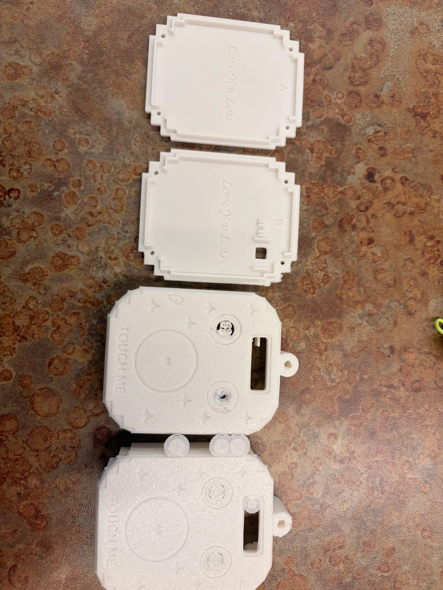
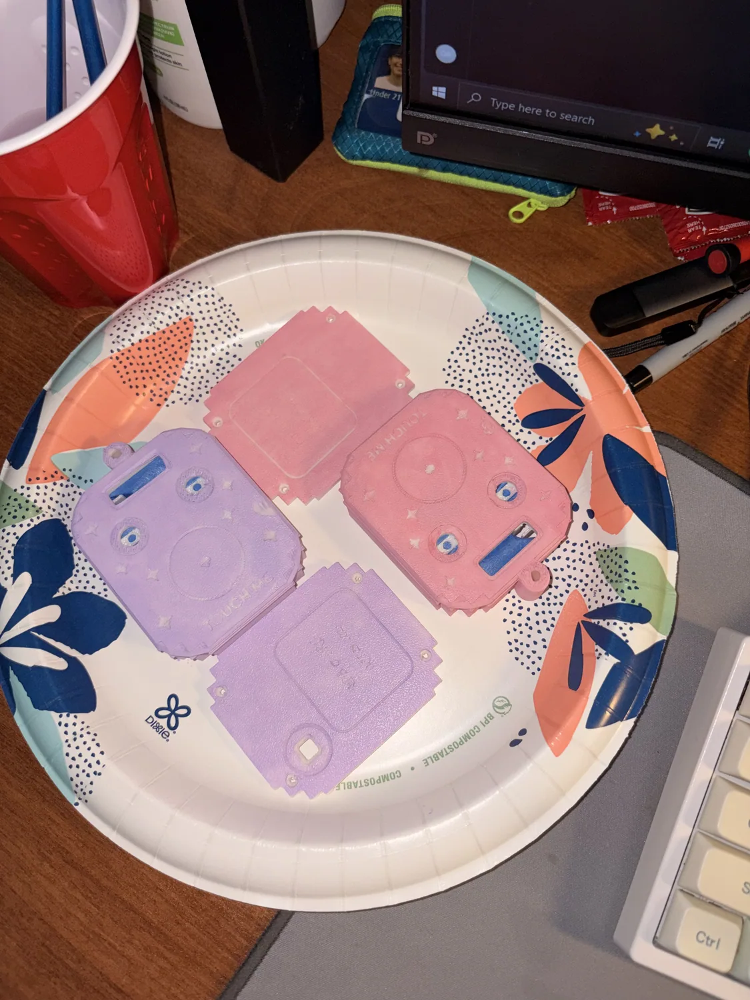
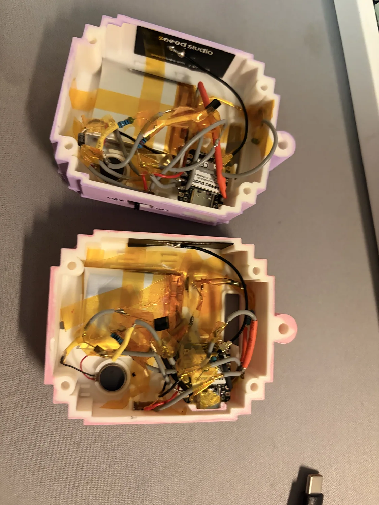
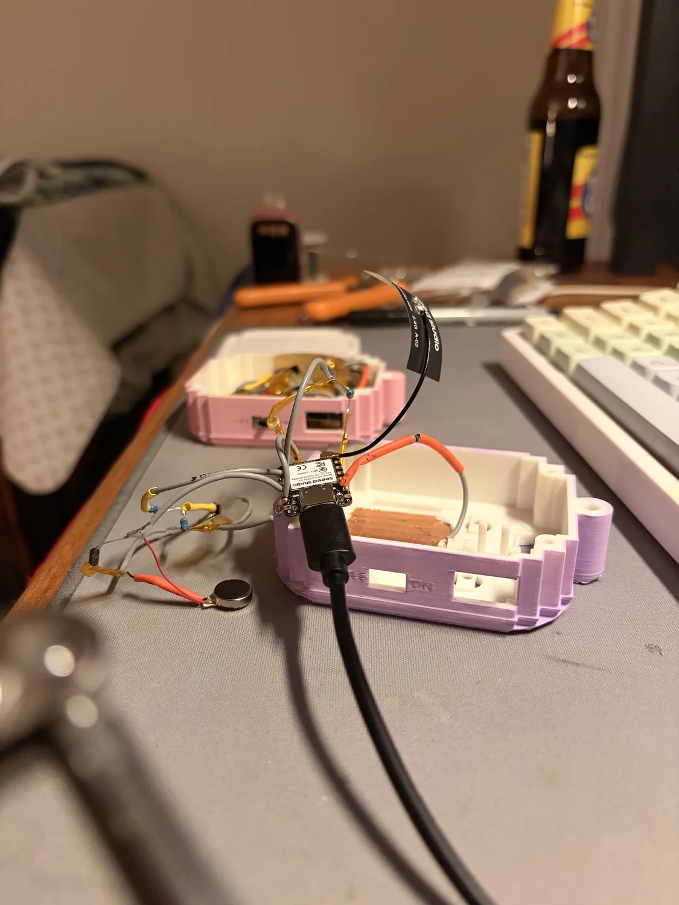
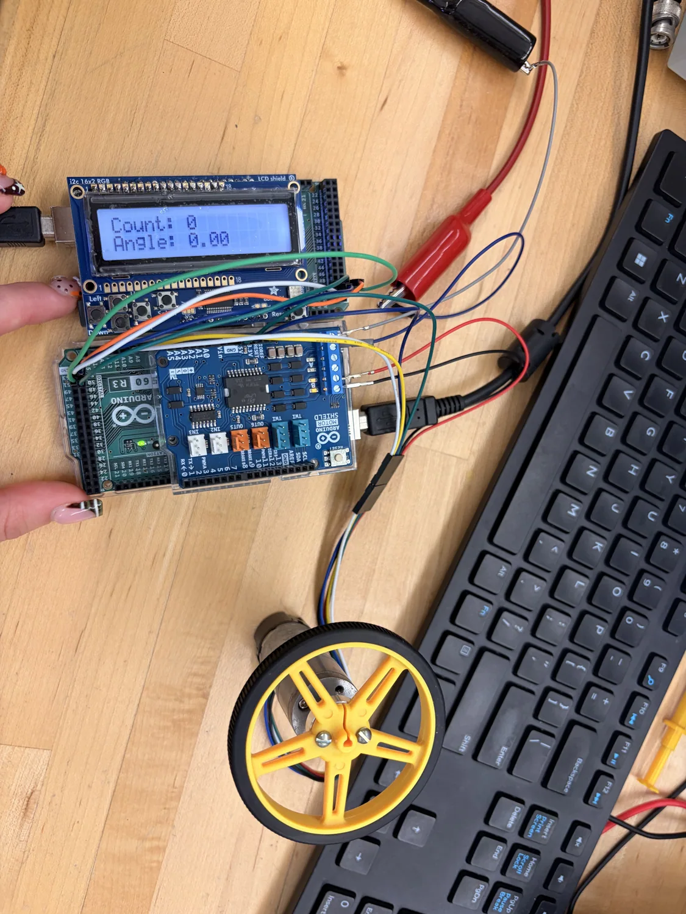
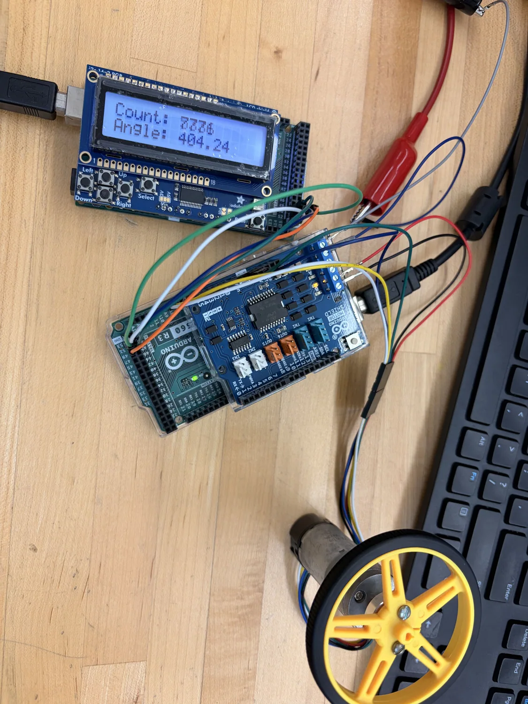
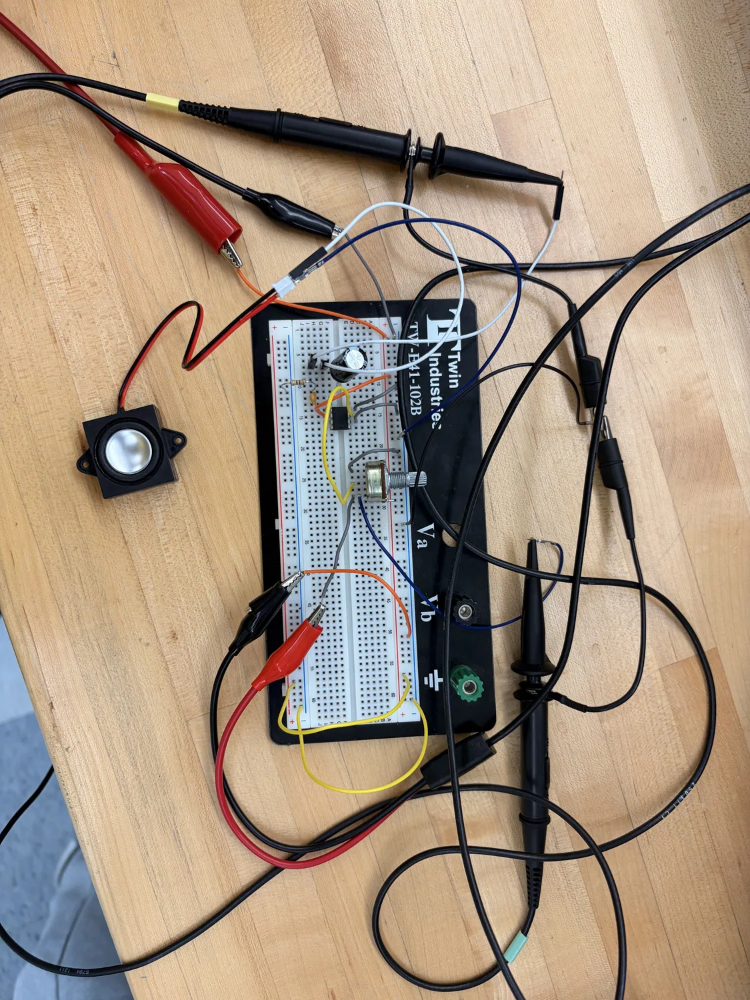
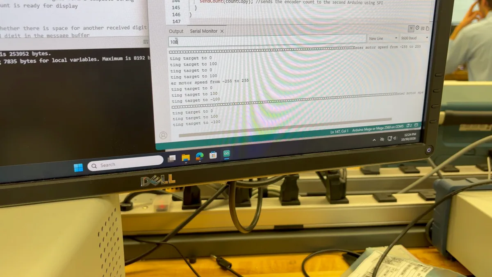
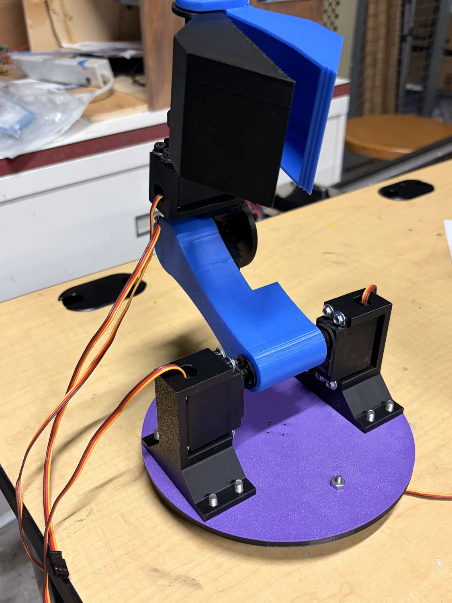
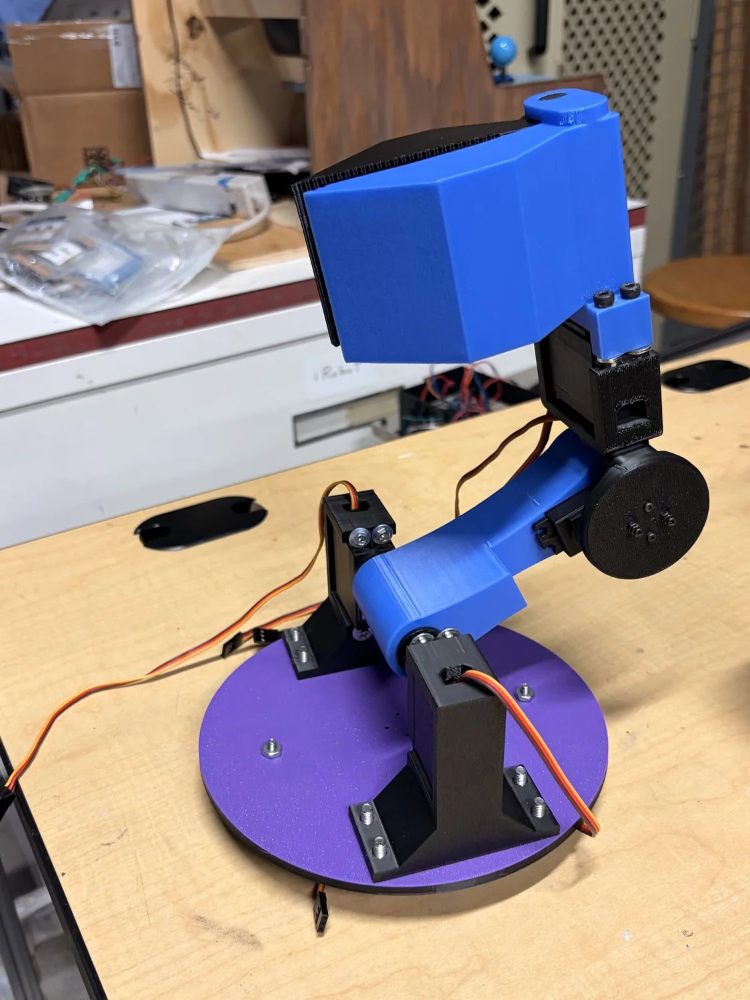

<!-- START: 2026 engineering builds (paste before </main> in portfolio.html) -->
<section class="new-builds" id="recent-builds" aria-labelledby="recent-builds-heading">
  <div class="new-builds__inner">
    <div class="new-builds__heading">
      <p class="new-builds__eyebrow">2026 / HANDS-ON ENGINEERING</p>
      <h2 id="recent-builds-heading">Recent Engineering Builds</h2>
      <p>From designing the enclosure to wiring the electronics and debugging the code, these are some of the projects I have been building and testing recently.</p>
    </div>

    <!-- PROJECT 1: FLOWER TOKENS -->
    <article class="build-card" id="flower-tokens">
      <div class="build-card__intro">
        <p class="build-card__category">PERSONAL PROJECT / EMBEDDED SYSTEMS</p>
        <h3>Flower Tokens — Connected Keepsakes</h3>
        <p>I designed and built a pair of handheld devices that send little signals to each other over Wi-Fi. Each token uses an ESP32-C3, addressable LEDs, and a vibration motor. I also designed and 3D-printed the enclosures, painted them, soldered the electronics, and tested the finished devices.</p>
        <div class="build-card__tags" aria-label="Technologies used">
          <span>ESP32-C3</span><span>Wi-Fi / MQTT</span><span>C++</span><span>OpenSCAD</span><span>3D Printing</span><span>Soldering</span>
        </div>
      </div>
      <div class="build-card__media-layout">
        <figure class="build-card__demo">
          <video controls playsinline preload="metadata" poster="assets/flower-tokens-finished.webp" aria-label="Demonstration of finished connected Flower Tokens">
            <source src="assets/flower-tokens-demo.mp4" type="video/mp4">
            Your browser does not support HTML5 video.
          </video>
          <figcaption>Finished tokens — demo video</figcaption>
        </figure>
        <div class="build-card__gallery" aria-label="Flower Tokens project photos">
          <a class="build-card__tile" href="assets/flower-enclosure-parts.webp" target="_blank" rel="noopener noreferrer">
            
            <span>Printed enclosure pieces</span>
          </a>
          <a class="build-card__tile" href="assets/flower-painted-shells.webp" target="_blank" rel="noopener noreferrer">
            
            <span>Hand-painted shells</span>
          </a>
          <a class="build-card__tile" href="assets/flower-interior-assembly.webp" target="_blank" rel="noopener noreferrer">
            
            <span>Both devices assembled</span>
          </a>
          <a class="build-card__tile" href="assets/flower-electronics-test.webp" target="_blank" rel="noopener noreferrer">
            
            <span>Electronics testing</span>
          </a>
        </div>
      </div>
    </article>

    <!-- PROJECT 2: MOTOR / ENCODER LAB -->
    <article class="build-card" id="motor-encoder">
      <div class="build-card__intro">
        <p class="build-card__category">ECE 112 / MECHATRONICS</p>
        <h3>DC Motor Encoder &amp; Position Logging</h3>
        <p>I wired an Arduino Mega motor-and-encoder setup with an LCD display, then connected it to MATLAB to record shaft position over time. The main challenge was getting the serial communication and data capture working reliably. The final recording compared a fixed reference angle with encoder measurements as I turned the shaft by hand.</p>
        <div class="build-card__tags" aria-label="Technologies used">
          <span>Arduino Mega</span><span>Quadrature Encoder</span><span>MATLAB</span><span>Serial Communication</span><span>LCD</span>
        </div>
      </div>
      <div class="build-card__media-layout">
        <figure class="build-card__demo">
          <video controls playsinline preload="metadata" poster="assets/motor-demo-poster.webp" aria-label="Arduino motor encoder and serial position logging demonstration">
            <source src="assets/motor-encoder-demo.mp4" type="video/mp4">
            Your browser does not support HTML5 video.
          </video>
          <figcaption>Encoder readout and serial capture — demo video</figcaption>
        </figure>
        <div class="build-card__gallery" aria-label="Motor position measurement photos">
          <a class="build-card__tile" href="assets/motor-lcd-readout.webp" target="_blank" rel="noopener noreferrer">
            
            <span>LCD position readout</span>
          </a>
          <a class="build-card__tile" href="assets/motor-angle-measurement.webp" target="_blank" rel="noopener noreferrer">
            
            <span>Angle measurement</span>
          </a>
          <a class="build-card__tile" href="assets/motor-encoder-wiring.webp" target="_blank" rel="noopener noreferrer">
            
            <span>Breadboard and wiring</span>
          </a>
          <a class="build-card__tile" href="assets/motor-serial-debug.webp" target="_blank" rel="noopener noreferrer">
            
            <span>Serial data debugging</span>
          </a>
        </div>
      </div>
    </article>

    <!-- PROJECT 3: ROBOTIC ARM -->
    <article class="build-card" id="robotic-arm">
      <div class="build-card__intro">
        <p class="build-card__category">LUNARBOTICS / ROBOTICS OUTREACH</p>
        <h3>Servo-Driven Robotic Arm</h3>
        <p>As part of a Lunarbotics outreach project, I worked on a multi-joint robotic arm with 3D-printed components and servo motors. My work has included Arduino Mega control, servo positioning, and getting commands from a computer to the hardware over serial communication.</p>
        <div class="build-card__tags" aria-label="Technologies used">
          <span>Arduino Mega</span><span>Servo Motors</span><span>UART</span><span>Python</span><span>Robotics</span>
        </div>
      </div>
      <div class="build-card__gallery build-card__gallery--arm" aria-label="Robotic arm build photos">
        <a class="build-card__tile" href="assets/robotic-arm-front.webp" target="_blank" rel="noopener noreferrer">
          
          <span>Arm prototype — front</span>
        </a>
        <a class="build-card__tile" href="assets/robotic-arm-side.webp" target="_blank" rel="noopener noreferrer">
          
          <span>Arm prototype — side</span>
        </a>
      </div>
    </article>
  </div>
</section>
<!-- END: 2026 engineering builds -->
